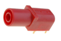
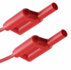

HV CAN Isolation Resistance Emulator Card
Description of the High Voltage CAN Isolation Resistance Emulator card for HIL Connect Hardware.
Card Introduction
The HV CAN Isolation Resistance card is designed to offer PT1000 or NTC resistor emulation capability. It relies on a discrete resistor array that achieves the desired resistance by toggling individual resistors through low-resistance relays.
HV CAN Isolation Resistance Emulator card revisions
| Code | Revision | Part number |
|---|---|---|
| MO | 1.0 | 25244 |
Hardware Settings
Control of the resistance is done via CAN interface. CAN ID: 0x0 to 0xF is selectable by a rotary switch on the card.
| Option | Method | Possible options |
|---|---|---|
| CAN ID selection | Via internal or external rotary switch | CAN ID set from 0 to 15 |
CAN Message Layout
In a single CAN Message, two resistor channels can be updated. The list of resistor channels is described in Table 3 with definitions below. An example CAN message is provided in the CAN message example section.
| Byte | Message | Start Bit | Stop Bit | Comment |
|---|---|---|---|---|
| 1 | Resistor ID | 1 | 8 | Resistor ID (i.e. 1) |
| 2 | Resistance MSB | 9 | 16 | Most Significant Byte of 16-bit resistance representation |
| 3 | Resistance LSB | 17 | 24 | Least Significant Byte of 16-bit resistance representation |
| 4 | Resistor ID | 25 | 32 | Resistor ID (i.e. 2) |
| 5 | Resistance MSB | 33 | 40 | Most Significant Byte of 16-bit resistance representation |
| 6 | Resistance LSB | 41 | 48 | Least Significant Byte of 16-bit resistance representation |
Resistor IDs are ordinal numbers of resistance channels. For the Isolation Resistance card, Byte 1 must be 1, while Byte 4 must be 2.
Byte 2 is the Most significant Byte of the resistance 16-bit value of the resistor with ID1.
Byte 3 is the Least significant Byte of the resistance 16-bit value of the resistor with ID1.
Byte 2 is the Most significant Byte of the resistance 16-bit value of the resistor with ID2.
Byte 2 is the Least significant Byte of the resistance 16-bit value of the resistor with ID2.
The method for calculating the 16-bit value is the following:
is a binary representation of the resistance value that should be send as a 16-bit message to the resistor emulator. This value takes a range from 0x0000 to 0xFFFF.
is the actual value of the resistance which we want to emulate. Note that it will be rounded to an integer multiple of the value.
is the least significant bit in the binary weighted network of the resistors soldered to the emulation card. For this card, this is 1 kΩ.
Channels to be set: 1 and 2 with values 15655900 Ω and 1000000 Ω respectively
| Byte | 1 | 2 | 3 | 4 | 5 | 6 |
|---|---|---|---|---|---|---|
| Message | RES1 | MSB1 | LSB1 | RES2 | MSB2 | LSB2 |
| Data | 0X01 | 0X03D | 0X28 | 0X02 | 0X03 | 0XE8 |
Hardware Specification
| Parameter | Value |
|---|---|
| Type | Resistor emulator |
| Number of channels | 2 |
| Input signal range | CAN message |
| Output range | 0..65535000 Ω |
| Resolution | 1000 Ω |
| Accuracy | ±1% ±1.2 Ω |
| Isolation | 1000 V |
| Update rate | 5 ms |
| Maximum Power | 0.50 W |
| Comment | Isolation: Channel to chassis and channel to channel |
Connector Data
| Type | Mating part |
|---|---|
 |
 |
Pinout
| Connector | Pin | Resistor channel | Comment |
|---|---|---|---|
| X1 | n/a | R1_1 | Terminal 1 of resistor 1 |
| X2 | n/a | R1_2 | Terminal 2 of resistor 1 |
| X3 | n/a | R2_1 | Terminal 1 of resistor 2 |
| X4 | n/a | R2_2 | Terminal 2 of resistor 2 |